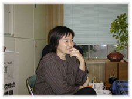

|
■書評は楽じゃない
藤森 僕はきっと書評でもしない限り本はあんまり読まないと思うな。たぶん研究のための本ばかりなんじゃないかしら。そういう意味で、書評をやらせてもらっているのはありがたいですね。
僕がはじめて書評をしたのは「週刊朝日」なんです。新聞書評は知らないんですが、むかしの書評委員会は贅沢の極まりだったそうですね。ほとんど料亭で遊んでいるようなもの。僕が「週刊朝日」を始めたころも、２週間に1度は料亭か銀座のマキシムに行ってましたからね。
森 キャッ、いいですね（笑）。
藤森 銀座のマキシムで一室を借り切って、そこにダッと新刊が２週間分ぐらい並べられるわけ。みんな好きなだけ取って、袋に入れて、食事をして、後は車でお帰り。みんなが「贅沢でいい」と言ったら、伊東光晴さんがニヤッと「むかしはこんなもんじゃない」って（笑）。
森 私は新聞書評を３誌やったけれども、確かに朝日新聞がいちばん書評欄にお金も人も使っている感じ。
藤森 何と何をやった？
森 朝日、毎日、読売。毎日はアットホームで楽しかった。
藤森 ほう。書いている方にとっては、書評は一種の一つの楽しみでしょう。
森 そうですけれども。今はあんまり書評で本は動かないといいますね。店頭で選ぶんだって。
藤森 かもしれないね。自分でも出すからあまりいえないけれど、書評集というのは、俺はあんまり興味がなかったんだ。でも坪内祐三さんの『文庫本を狙え！』（小社刊）を読んだら、ひじょうに面白くってさ。あれは不思議な面白さだね。1個1個ちょこちょこと味があってね、やみつきになる。なんかね、落語の面白さみたい。
森 坪内さんは芸があって、ほんとうに本が好きだというのが伝わってくる。藤森さんの書評集も面白そうですね。
藤森 面白いかどうかは分からないけれども、僕は、ほんとうに本が好きというんじゃないんじゃないかな。僕はいつもそうだけれども、自分の書いた物にあまり興味がないのね。読んでいる人に失礼だけれども、僕にとっては終わったことなんだよね。
森 そうなんだよね。いつも前へ前へ行ってしまう。階段の下の段はもう見なくても……。
藤森 『建築探偵の冒険』がいい例だった。筑摩書房の松田哲夫さんから、こういう本を出したいと言われたときに断ったのよ。「１０年前にやった仕事で、いまは他の仕事に興味があるからイヤだ」と言った。でも松田さんがとにかく僕の文章を全部集めて、目次があって、束見本みたいなものに貼ってあるんだよ。ほんでさ、図版とか書いてあって、もう本が出来てるの（笑）。それを見てさ、ここまでやるんだったらちゃんとやらなくてはいかんぞ、と手を入れたりしたんだけれども。
僕は自分としては、先端的な興味が消えてなくなっている辺から、社会の関心が始まるんですよね。僕は一応文章を書いてやってきたんだけれども、けっこう世の中には、社会化にはあまり関心を持たないでやっている人、ほんとうにそこで止めてやっている人が相当いるんじゃないかと思う。
森 そうなんじゃないですか。だから、きっとすごく大事なものが本にならずにあちこちに散らばっているんだと思う。
藤森 そう。編集者がそれに気付かないことがあるよね。本人の側はする気がない。だって、他のことで使われたりするわけだから。純粋に学術的なところで十分な成果をあげていたり、他の領域で、たとえば自然科学だったら他でも高く評価されていればいいのだから。だから、ノーベル賞を誰もしらない人が貰ったりする（笑）。
森 白川さんのことは誰も知らなかったよね。申し訳ないけれども。藤森さんの場合は、たまたま松田さんがいたから。インタープリターというか、それを一般的に解釈し直して伝える。それは私たち一般の読者にとっては、とてもありがたいですね。
藤森 それは編集者の大きな力だと思う。今度の本もまとめようっていう気はさらさらなかった。編集者の中川六平さんがまとめたいと言って、六平さんが選んだのね。で、選んだのを読んで、これだったら出していいかと思ったんだ。自分のことは自分で分からないというのがあるんじゃないのかね。人によるかも知れないけれど。
森 そう。だから、編集者はいなきゃ困る。そしてちゃんと仕事してくれないと困るんですね。私は実は書くより編集の方が好きなんだけども（笑）。さっきのお話に戻るのですけれども、確かに本にする材料はたくさんあって、見過ごしていることはあると思うんです。でも、おもしろい研究が必ずしもおもしろい本にはなりませんね。
藤森 それはひじょうにある。編集者が自分で本を書くわけにはいかない（笑）。編集者が思っているおもしろさ、あるいはふつうの人がおもしろがるように書くかどうかということは、ちょっとむずかしいことですよ。
■聞き書きの効用
森 いま作っている本の話になるんですが、むずかしいことをわかりやすく伝えるというとき、聞き書きというのはなかなかよい方法だと思うんです。四手井さんのいままでの本は、やっぱり論文に近くて、ふつうの人が読めるというわけじゃないから。四手井綱英さんというのは昭和20年代に「里山」という言葉を最初に使った人なんです。
藤森 僕は子どもの頃には「里山」という言葉は聞いていないですもんね。里山というのは、法律的には「入りあいの山」と言われていたんだ。四手井先生が作ったんだ。すごいね。ちゃんと国語を作った。
森 人間の身近にあって、人間が働きかけて薪やキノコや薬草やいろんなものを頂く農用林ですね。今西錦司さん、西堀栄三郎さん、桑原武夫さんとほぼ同世代なんです。今西さんと1中の時から山岳部で一緒という。
藤森 最後の生き残りだ。
森 最初、私がNHKの番組でお話を聞きに行ったら、すごくおもしろくて、格好よくて、これを丸ごと伝えたいと思って。
藤森 里山というと思い出すことがあるんです。僕はそれこそ子どもの頃は、本より田舎の山を走り回っていた。山はよく知っているんですよ。いまでも歩いていますから。そうすると明らかに自然は回復しているんです。猿は出るわ、鹿は出るわ、熊だって出る。明らかに木の大きさが３倍ぐらいになっているのではないかな。それをひじょうにいいことだと思ってあるところに書いたら、お手紙がきた。「自然が回復しているということは、里山が消えていることである」。
そんなことがあった後、養老孟司先生と新潟にスキーに行ったんです。山の上から森を見ていたの。あの人は昆虫博士みたいな人だから、
「あの辺の森にはいろいろな昆虫がいる」と言うのよ。
「どうしてわかるんですか」
「あの辺は里山で、昆虫がすごく多いんだ」
ちょっとびっくり。
昆虫は基本的に里山みたいな、木があって半分人工の山のほうが多いらしい。人家が好きな動物も来るし、山の中からも来て、そこはいちばん豊かなんです。
自然の美しさは３種類あると思う。まず、ほんとうの原生林の美しさがありますよね。日本にはほとんど原生林はないけれども。それから、人の手の入った山林である里山の美しさなんです。そして、僕は畑や田んぼの美しさがあると思う。完全に人間が管理している自然です。この連続性が日本の景色の美しさだと、僕は最近つくづく思うね。

森 農家の軒につるし柿が干してあるのでも、すごくきれいなところがありますよね。漬け物にするダイコンが並んでいたり。
藤森 そうそう。自分の村もそうだった。いまは四手井先生に頭を垂れて「里山は大事である」と思っている。
森 いまだに森林生態学という講座があるのは京都大学だけらしいんです。
藤森 あの人は農学部の林学科にいた方なの？
森 林学科です。その頃はおかしくて、1年ごとに林学科と農学科を交互に募集してた。
藤森 あっ、そう。大きくは農学部ですけれどもね。確かに森林生態学というのは、生態学全体のなかの基礎ですよね。森林は最大の自然物ですから。
森 すごく読みやすい本です。四手井先生は、たまにしか私たちが行かないものだから、毎回同じ話になる（笑）。お近くにいれば、もっとしょっちゅう通えたんだけれども。先日私は、建築史家の太田博太郎先生のところに行って、お話を聞いたんです。その頃の東大の建築史のなかで、明治建築というのはどういう位置であったか、お聞きしたのですが、全然位置付けなんてなかったようですね。
藤森 今日僕らがやっているような研究が可能になったのは、太田先生と関野克先生のおかげ。お二人が「日本の近代をやらなくてはいかん」ということで、東大がやり始めた。それまで僕らのやっている明治以降のことなんて学問じゃない。思い出だ（笑）。
森 桂離宮とか興福寺とかの研究ばかりでした。太田先生が学生でいらした昭和初期はまた堀口捨己など分離派が華やかで明治は流行らなかったとか。
藤森 歴史ってさ、忘れられた、知らないことを発掘することばかりに力をいれすぎるよね。せっかく本人が生きているのになにも聞こうとしない。その本人が生きているときにオリジナルを取る。それは大事なことです。聞き取りというのは、間違いますけれども、ゼロよりはいいんだよ。
それともう一つね。極めておもしろいことに気付いた。ずっと建築関係の聞き取りをやっているでしょう。大事な問題ほど人によって記憶が変わる。なぜかというと大事な問題はものすごく印象深いの。だからかえって、その人が深く個人的に関係しているところばっかり見えて、覚えているわけ。そしてその記憶を反復する。こうだった、こうだったとね。
森 私は生活史みたいなところで、おばあさんとか、いわゆるふつうの人に聞き書きをすることが多いのですが、記者や研究者、とくに男の人って、資料は読めるけれども聞き書きが出来ない人が多いと思いませんか。でも、藤森さんは上手ですよね。
藤森 僕にはジャーナリストという感じがないわけですよ。歴史家というのは坊さんと同じだから半分死んでいるわけで、それは話やすいのよね。たぶんおもしろそうに相手の話を聞くんじゃないかな。
森 じつに嬉しそうな顔をして聞いていらっしゃる。
藤森 気がつくと傍によっている時があるもんね。
森 逆にジャーナリスト、ルポルタージュ作家などは怒らせて喋べらすというか、そういうのがあるみたいね。私には絶対に出来ない方法なんだけれども。たとえば、テレビでは田原総一郎は、わざと怒らせて本音を言わせてしまう。
藤森 ルポルタージュの人たちは、世の中のイヤなことをやるわけですよ。むかしのトップ屋の伝統で、隠しておきたいことを暴くわけですから。生活史とか僕らがやっているのとはちょっと違うよ。
森 私たちは自慢したいことを聞きに行くんだもんね。
藤森 そうそう。そこが違う。
森 藤森さんは、女の人をもっとしゃべらせなくちゃ。おばあさんとか得意じゃないですか。
藤森 女の人は苦手。僕がいままでいちばん面白かったのは、昭和７年の「大森銀行ギャング事件」の主犯のインタビュー。あれはおもしろかった。
森 なんでそんな人のところに行ったの？
藤森 だって、建築家だもの。今泉善一さん。建築界で今泉は若いときに有名だった。共産党の資金稼ぎのために銀行ギャングをやったって。治安維持法の有名な事件で、それから共産党は市民の信頼をどんどんなくすんです。裁判の記録があるから、いずれそれを調べればいいと思ってたの。だけどけっきょくね、本人に聞いてよかったのは、治安維持法は銀行強盗は対象にならない。当たり前だよ。だから銀行ギャングのことは一切論議されなかった。「お前は銀行ギャングをやったか」なんてことすら聞かれなかった。
森 なんで聞きに行ったのですか。
藤森 俺もそういうことが好きだった。
森 その頃はまだ暇だったの？（笑）。
藤森 そういうことを聞いておきたいと思ったの。ふつうでは喋らないと分かっているから、建築学会の名前で聞きに行った。『建築雑誌』の特集で「１９４０年代、戦争中の日本の建築」の特集。彼は学会であれば、喋ってくれるのではないか。逆に言えばね、どこにも記録がないから喋っておきたいと思っているのではないかと思った。行ってね、話を聞きはじめたけれども、高等学校時代の話まではいいわけね。いよいよ彼が大蔵省に入って、そうすると彼も藤森が聞きたいことは、もう分かるわけよ。切り出しずらい。奥さんが本気で睨んでいる。
森 （爆笑）
藤森 そんな中で、切り出した。
「ところで、先生。いよいよギャングのことで_」。
彼もしばらく言わない。奥さんは早く帰れ！という感じ。
「じゃあ、しゃべるから」と克明にしゃべってくれた。おもしろかった。アジトの作り方。いかにスパイ役にやられたか。ピストルはどうやって手にいれたか。なぜ大森銀行を選んだかとかね。それは自分の非合法の時代の部下の親父が大森銀行の頭取かなんかで、中の様子をよく知っていたとか（笑）。
森 本筋とは全然関係がないところから、おもしろい話がでてくることがありますね。北林谷栄さんの話はすごかったですよ。ある日「私も舞台に出たいんですけれども」と訪ねてきた女の人がいて、その人は洋裁学校の人かなんかで演劇のことを知りもしないのに知ったかぶりなことを言う、北林さんはイヤな奴だなと思ってすぐに断ったんだそうです。それが太宰治と心中した山崎富栄だったとか。ひょんなところで人と人とがふっと、すっとすれ違っているのね。
藤森 ひょっこりね。
森 歌人の斉藤史さんのところに行ったら、２・２６事件の話をなんとなくしてくださって、「でも私は、これは墓場に持っていくの」なんておっしゃる。お父さんが斉藤瀏といって、歌人でもあったんですが２・２６事件に連座した陸軍少将で、青年士官と史さんが旭川にいた頃の小学生の友だちだったり。史さんというのは反骨の歌人と思いますが、何年か前、「歌会始」に呼ばれて皇居に行った。
森 史さんが「歌会始」に行ったときに、いまの天皇が「斉藤瀏ね」と言って、うなずいたと言ってらしたけれども（笑）。
藤森 聞き書きということでいえば、「書かれた物の方が喋った物より史を通していい」ということがある。歴史学でね。でも、僕はそれは異様なことだと思うのね。なぜかというと、僕が文章を書くでしょう、喋るでしょう。同じ頭から出ているんだよ。なんで字にしたものが確かで、喋ったものは不確かなのか。字で書いたものの方が変な言い方だけど、嘘をつきやすいのよ。
森 （拍手）。
藤森 文章は直せるんだもの。後で絶対に推敲する。だから嘘だって混ざる。
森 ほんとうに。一次資料というのは、活字資料だという思い込みがすごくある。
特に女性史、民衆史、生活史みたいな分野では、公文書なんか、活字の記録なんかあるわけがない。
藤森 自分で書く人なんかいないよね。だいたい自叙的なことって、みんな大事だと思っていない。
■文学はめめしい
森 それといつも不思議に思うのは、日本は小説ばっかりが偉そうですね。坪内祐三さんは「僕は雑文家だ」と胸張って言うのだけれども。外国にはすてきな雑文家がいっぱいいるけれど、日本にはなかなかいない。いても評価されない。雑文家だと言うのはけなし言葉だし。
藤森 いまは文学者もほとんどは雑文で食っているわけだけれどもね。生活の基盤は雑文ですよ。文学だけで食べれる人はよほどの人です。
ただ僕は子どものの頃、文学はめめしいと思っていたんだよ。いまでも、思うときがある。文学をやっている人って、なんかめめしいよ。深く考え過ぎている。
森 前向きじゃないし、世の中をよくしようということに何の希望も持たないよね。文人墨客というのか、社会に関わるのはとても嫌がるし。
藤森 特に近代文学は戦争とか革命とかがテーマになっているから、暗い。だけど、僕は大学時代はたいていの本を読んだよ。高校時代はいっさい読まなかったから。ほとんどそのときの読書で、いまやっているようなもの。
森 その頃から近代建築に興味があったんですか。
藤森 いや、その頃はまだ建築の設計をしようと思っていたから。大学に入ったら突然、ニヒルな感じになっちゃった。
森 藤森さんがニヒルになるなんて。
藤森 ほんとうに自分で似合わないんだけどさ。それで手当りしだい本を読んだ。あのときがなかったら俺は文章を書くことがなかった。そのなかでいちばん強く惹かれたのが文学でしたね。ただは惹かれたけれども自分のやることでは、まったくないと思った。文章は社会的事業でしぶしぶ書いていた。ほんとうに文学をやっていた連中は、いまはみんな酒屋の主人になっていたりするんだけど、そいつらと会うと「お前の文章はむかしから文学と違う」と言う。僕のは、文学とはもうちょっと違う文体なんですよね。森さんはさ、読んでいるのが文学系の人だと思うね。
森 私は都会育ちのせいもあって、わりと早熟で小学生ぐらいの頃から小説に惹かれて、高校ぐらいまでは音楽、美術、文学だったのが、大学に入って突然文学に興味がなくなってしまった。
藤森 俺とまったく逆なんだね。
森 大学にいたとき読んだのは、ゴーリキーの『母』とマルティン・デュ・ガールの『チボーの人々』ぐらいですよ。
藤森 俺はね、あなたが高校まで読んだ本をみんな大学のときに読んでいるんだわ。大学では何をやっていたの。
森 政治思想史。プラトン、アウグスティグス、ホッブス、ロック、ルソー。政治哲学ですよね。
藤森 むずかしいじゃない。
森 全然むずかしくって、全く私にはこの才能はない。私は総合して表現する力はあっても、分析する力はないと思った。歌ったり踊ったりする方がまだましだって。
藤森 じゃあ、文学に戻ったんだ。
森 戻ったんでしょうね。でも戻ったという意識もなくて、職業人になろうという気もまったくなかった。好きな男と暮らせればいい、それしかなかった（笑）。何の自覚もなく、流れのままにこうなっているだけ。でも、いま思えば本が好きだったのは確かですね。
藤森 いずれにしても、文章の基本は文学だろうと思う。物語です。人間が最初に記録していったのは物語だから。
森 その物語が、狭い意味での小説だけに限られず、歴史も含めて、人間の豊かな記憶、そして記録になっていくといいんですけどね。
|